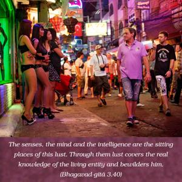
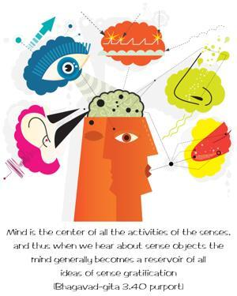
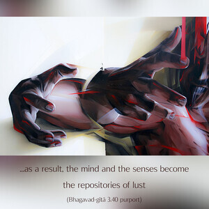
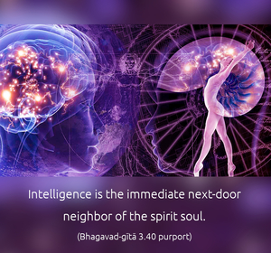

The senses, the mind and the intelligence are the sitting places of this lust. Through them lust covers the real knowledge of the living entity and bewilders him.




The enemy has captured different strategic positions in the body of the conditioned soul, and therefore Lord Kṛṣṇa is giving hints of those places, so that one who wants to conquer the enemy may know where he can be found. Mind is the center of all the activities of the senses, and thus when we hear about sense objects the mind generally becomes a reservoir of all ideas of sense gratification; and, as a result, the mind and the senses become the repositories of lust. Next, the intelligence department becomes the capital of such lustful propensities. Intelligence is the immediate next-door neighbor of the spirit soul. Lusty intelligence influences the spirit soul to acquire the false ego and identify itself with matter, and thus with the mind and senses. The spirit soul becomes addicted to enjoying the material senses and mistakes this as true happiness. This false identification of the spirit soul is very nicely explained in the Śrīmad-Bhāgavatam (10.84.13):
yasyātma-buddhiḥ kuṇape tri-dhātuke
sva-dhīḥ kalatrādiṣu bhauma ijya-dhīḥ
yat-tīrtha-buddhiḥ salile na karhicij
janeṣv abhijñeṣu sa eva go-kharaḥ
“A human being who identifies this body made of three elements with his self, who considers the by-products of the body to be his kinsmen, who considers the land of birth worshipable, and who goes to the place of pilgrimage simply to take a bath rather than meet men of transcendental knowledge there is to be considered like an ass or a cow.”